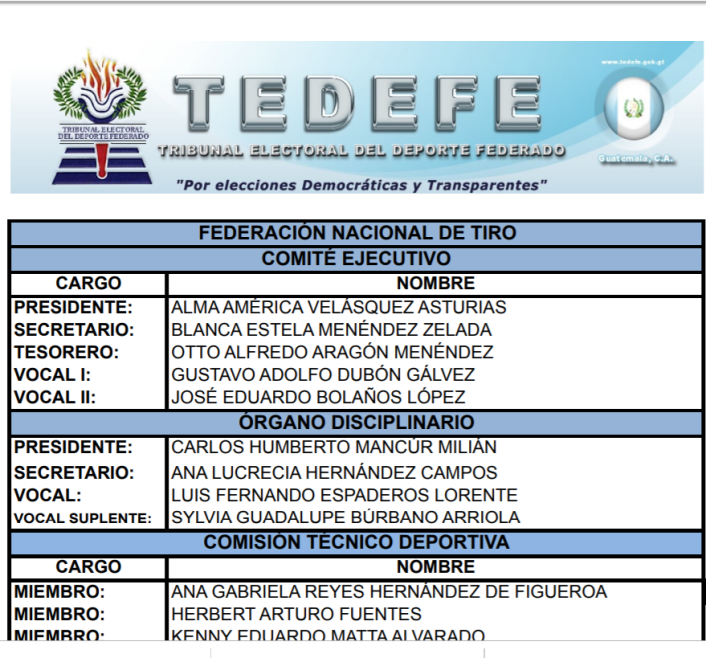

El negocio en Guatemala no son las empresas de seguridad privada. Ni las armas. El negocio está en las
municiones. Estadísticas históricas de importaciones y ventas de municiones, así como varias entrevistas, lo
confirman. Tomando en cuenta el número de municiones importadas, se podría haber asesinado a la población
completa de Guatemala once veces.
Guatemala bucea entre casquillos. Entre 1996 y abril de 2018 se han importado más de 415 millones de municiones
(415,519,458 con exactitud), según registros de la Dirección General de Control de Armas y Municiones, entidad
encargada de regular ese sector y que fue fundada en 2009, a raíz de la creación de la Ley de Armas y
Municiones. Antes, la entidad a cargo era el Departamento de Control de Armas y Municiones. Ambas entidades bajo
jurisdicción del Ministerio de la Defensa Nacional.
Las estadísticas de violencia son la referencia más clara: desde al menos 2008, el porcentaje de muertes
violentas en Guatemala que tiene un arma de fuego detrás ronda entre el 70 % y el 80 %, según datos de la
Policía Nacional Civil analizadas por la Asociación Diálogos, dedicada el estudio de la violencia en Guatemala.
Pese a los indicadores, el negocio de las armas no parece disminuir. Por el contrario, los controles que se han
intentado imponer se volvieron laxos luego de quejas judiciales ganadas por los armeros.
Homicidios 2008-2018
Detalle de la cantidad de homicidios perpetrados en Guatemala, entre 2008 y 2018, por causa de
muerte. Las
muertes violentas tienen, en la mayor parte de los casos, un arma de fuego detrás.
Fuente: Asociación Diálogos, Policía Nacional Civil.
«Uno de los grandes hallazgos que tuvimos, además de que todas las empresas de seguridad eran de militares y que
todo el circuito era dominado por militares, era que el negocio no eran las armas. Eran las municiones», afirma
José Alfredo Calderón, quien en la década de los 2000 trabajó en la Comisión de Desarme y, posteriormente, formó
parte del grupo que apoyó la iniciativa de ley para regular las armas y las municiones, así como a las empresas
de seguridad.
¿De cuánto es ese negocio? Según datos históricos de importaciones del Banco de Guatemala –que implican datos de
las empresas extranjeras proveedoras pero no el monto del artículo dentro de Guatemala– entre
1996 y 2017 (datos
parciales), las importaciones de armas y municiones han significado 171,832,023 dólares. Salvando
distancias de
la tasa de cambio de cada año, más de un mil millones de quetzales. La base de datos del comercio mundial de la
Organización de las Naciones Unidas (UN COMTRADE) fija para el mismo período importaciones hechas por Guatemala
a otros países por un poco menos de: 148,196,548 dólares, entre armas, municiones y piezas. Aunque según las
autoridades Guatemala no ha exportado armas ni municiones, UN COMTRADE registra exportaciones por poco más de
tres millones de dólares, entre 1996 y 2017 en este mismo rubro.
La Dirección General de Control de Armas y Municiones se negó a proporcionar valores de importaciones,
argumentando que se trata de información de entes privados y no sujetos obligados.
Es difícil hacer cálculos certeros ya que la información disponible es parcial y poco fiable. Laberinto del
Poder intentó desde 2017 obtener datos oficiales para dimensionar el comercio de armas y municiones en
Guatemala. En ese año, la Dirección General de Control de Armas y Municiones proporcionó un registro de
importadores de municiones –con información variable entre rangos de años—, pero no las cantidades importadas.
Para 2018 proporcionó la información sobre los importadores, pero no las cantidades de municiones adquiridas,
asegurando que no las tenía. Fueron necesarias dos solicitudes de acceso a la información más para que brindaran
las cantidades, pero desvinculadas de las empresas importadoras. La negaron por tratarse, argumentaron, de
«información privada».
Los nombres de las empresas importadoras de armas sí fueron proporcionados.
Algunos registros están disponibles únicamente desde 2009, cuando la ley cobró vigencia y con ella la obligación
de registrar las ventas de armas y municiones de todas las empresas del país.
El vocero del ministerio de la Defensa, Óscar Pérez, justificó que, de acuerdo a la Constitución de la República
y la Ley de Acceso a la información, este tipo de datos son de carácter reservado, ya que atañe actividades
empresariales particulares.
¿Qué tan grave podría ser el problema de la fluctuación de armas en Guatemala? Esto puede dimensionarse con un
simple dato. Guatemala es uno, de
apenas tres países del mundo, que garantizan el derecho constitucional a tener
armas de fuego. Los otros dos son México y los Estados Unidos, donde la laxitud relacionada a la tenencia y
venta de armas ha entrado a debate cada vez que surge un tiroteo masivo contra la población civil. En
los
últimos 50 años, ha habido más de 158 tiroteos en los Estados Unidos, con miles de víctimas como
resultado.
De acuerdo a la información
oficial disponible, para 2016 en Estados Unidos había 17 ventas de armas por cada
100 mil habitantes. En Guatemala, 0.9 por cada 100 mil habitantes, según estimaciones para 2018 (proyecciones de
población y empresas legalmente registradas). Hasta agosto de ese año, la Dirección General de Control de Armas
y Municiones registraba 164 empresas dedicadas a ese negocio de forma oficial.
Aunque Guatemala no
llega a los niveles de Estados Unidos en estimaciones de tenencia de armas en manos de
civiles —el país del norte ha sido ampliamente ranqueado como el mayor poseedor de armas a nivel mundial,
incluso con más armas registradas que población, o sea más de 310 millones—, según datos oficiales y
proyecciones de población, la tasa de tenencia en el país ronda las 4,136 armas por cada 100 mil habitantes. Es
decir que hay cuatro armas por cada 100 habitantes. Sin embargo, hay
estudios que clasifican más alta la
posesión de armas en Guatemala.
«Este negocio influye directamente en los homicidios. Si tuvimos 10 años en donde primero militarizamos la
seguridad, a partir del año 2000, luego no tuvimos ningún control sobre las empresas privadas de seguridad y
ningún control con la venta de armas y municiones, lo que hicimos fue un acumulado. Armamos una sociedad. La
sociedad se armó», opina el coordinador general del Centro de Estudios de Guatemala, Sandino Asturias.
En 2009, un estudio de la Comisión Internacional contra la Impunidad (Cicig) advertía los alcances de muchas
armas y municiones fluyendo dentro del país. «El comercio de armas no siempre está asociado a la existencia de
conflictos armados. Actualmente, las armas pequeñas y ligeras causan la mayor parte de muertes de civiles fuera
del contexto de los conflictos armados. Igualmente, las armas pequeñas son las más utilizadas en crímenes y
delitos comunes”, refiere el informe Armas de fuego y
municiones en Guatemala. Mercado legal y tráfico ilícito.
Negocio caro y de pocos
Carmen Rosa De León, directora del Instituto de Enseñanza para el Desarrollo Sostenible, asegura que el negocio
de «los armeros», como llama a los importadores y propietarios de empresas de venta de armas, son pocos, y no
todos son militares.
«Para la importación se requiere mucho dinero; para una importación de armamento tienes que depositar el dinero
en la empresa que te está haciendo el envío ahorita mismo. Al principio sólo eran como seis o siete los que
importaban», afirma De León.
El presidente de la Cámara de Seguridad, Rodolfo Muñoz Piloña, asegura que la única relación que existe entre
los armeros y las empresas de seguridad privada es la compraventa de armas. «Para importar armas se necesita
mucho capital. Al hacer un pedido, debe dar un porcentaje de adelanto; luego viene el armamento, lo llevan a la
bodega, hace la tramitología, paga los impuestos …”, explica.
Laberinto del Poder identificó a los mayores importadores de armas y municiones con base en la información
proporcionada por la Dirección General de Control de Armas y Municiones, respecto a cantidad de licencias de
importación extendidas.
De las diez empresas analizadas no se encontró ningún vínculo con militares. Los datos de Registro Mercantil y
de Guatecompras demuestran que el negocio de los armeros, a diferencia de las empresas de seguridad, es mucho
más cerrado, más pequeño. Por ejemplo, dos de las mayores importadoras han pertenecido a la misma persona, en
distintos períodos de tiempo.
Importadores de municiones
Estas son las empresas que más licencias de importación de municiones han recibido en los últimos 22
años.
Fuente: Digecam, Ministerio de la Defensa
Algunos nombres de representantes legales de ventas de armas se repiten en otras, así como en las empresas
importadoras de armas.
Así, por ejemplo, hay dos empresas entre el listado de las primeras 10 que han recibido mayor cantidad de
permisos o licencias de importación: Municiones y Comercial Agrícola Bolaños, con 68 y 53 licencias
respectivamente. Si se suman los permisos de importación obtenidos por ambas empresas resultan en 121, lo que
pone a José Eduardo Bolaños López, propietario de ambas compañías, en tercer lugar de importadores en más de 20
años.
La primera es Importadora Centroamericana de Municiones, S.A. La segunda es una empresa individual. Ambas tienen
como representante legal a Bolaños López, según datos del Registro Mercantil, actualizados hasta agosto de 2018.
Bolaños López explicó durante una entrevista que esto se debe a que la empresa con la que inició importaciones
fue Comercial Agrícola Bolaños. Aseguró que desde aproximadamente cinco años, sus negocios de importación los
efectúa con Importadora Centroamericana de Municiones, S.A.
Bolaños López, según documentos públicos, fue vocal de la Federación Nacional de Tiro en 2012, pero dejó el
cargo porque ya no se sentía cómodo.
Imagen 1

Según datos de Guatecompras, existe una empresa hermana llamada Comercial Agrícola Bolaños 2, pero según Bolaños
López tampoco es operativa. Además, Bolaños López –y su empresa individual– formó parte de un grupo de empresas
importadoras de armas que fueron chequeadas por la embajada de los Estados Unidos a finales de la década de los
2000, de acuerdo a filtraciones de cables diplomáticos de
Wikileaks.
Las filtraciones dan cuenta que empleados diplomáticos estadounidenses se encargaron de ejecutar chequeos de
«linterna azul», o Blue
Lantern checks, que son ordenados para corroborar datos del beneficiario final en
tratados comerciales que implican defensa y seguridad.
Entre los chequeos, llevados a cabo en 2008 y 2010, estuvo la empresa Comercial Agrícola Bolaños,
debido a
cientos de armas importadas desde la empresa Smith and Wesson. En uno de los cables, Bolaños López le cuenta al
diplomático que lo investiga que se dedicaba al negocio de las armas desde 1995.
Según el empresario, «quizá me han hecho un chequeo una vez cada ocho años».
Bolaños López también aparece como referencia en otros chequeos de Blue Lantern efectuados a otras
armerías.
Esto se debe, como el empresario admite, a que su principal negocio es la distribución a numerosas armerías por
poseer la representación de varias marcas de armamento. Tiene la representación compartida de Smith & Wesson, y
en exclusiva las de Winchester, Remington y Bersa de Argentina.
Otra de las empresas chequeadas fue Armería El Guerrero, propiedad de Aldo Eduardo Maselli González.
En el cable diplomático,
de mayo de 2009, el empleado de la embajada describe que Maselli González informó que
tenía siete meses de dedicarse al negocio de las armas junto con su esposa, pero que había sido guiado por
Bolaños López. El cable también dice que Bolaños López mostró un nivel «satisfactorio» de cumplimiento de los
requerimientos en cuanto a documentos, balances comerciales, facturas y resguardo de armas. En el documento
también quedó de manifiesto que Bolaños López era el proveedor de diversas armerías.
Edmundo Vicente Quidiello Azcuy ha fungido como gerente o administrador único de Aire Libre, S.A., Municar, S.A.
y Corpo Q, S.A., tres de las empresas que más licencias de importación de armas y municiones han obtenido
durante los últimos 22 años en Guatemala: 420 autorizaciones. Según datos del Registro Mercantil, actualizados a
agosto de 2018, en ninguna de ellas tiene un cargo vigente.
Los permisos de importación casi no han sido coincidentes a lo largo de los años. Mientras Corpo Q, S.A.
importaba, las otras dos empresas se abstenían, y viceversa. O alguna de ellas llevaba el mayor volumen de
importación de municiones.
Municar, S.A. y Aire Libre, S.A. comparten casi la misma junta directiva. Los nombramientos vigentes en ambas
incluyen a José Alejandro Castilla Coronado, Antonio Molina Bernhard, Edwin Fernando Martínez Zetino y Aída
Consuelo Chacón López, según datos del Registro Mercantil actualizados hasta julio y agosto de 2018.
Resultados en Guatecompras
Una simple búsqueda en Guatecompras evidencia la concentración de los armeros, y cómo varios
empresarios —que
manejan sus negocios como empresas individuales y no sociedades anónimas— poseen diversas sucursales
dedicadas a
la venta de armas en distintos lugares.
En el caso de Rolando Arturo Solís Paiz, además de las ocho empresas que tiene bajo su nombre, también es
representante legal de la sociedad anónima Combat, que ha sido una de las mayores contratistas de la Secretaría
de Asuntos Administrativos y de Seguridad de la presidencia de la República. El
empresario estaba inhabilitado
por adeudo tributario en Guatecompras, hasta inicios de diciembre de 2018, pero en enero de 2019 ya
estaba
nuevamente habilitado.
No está claro si el nombre comercial de Armas y Municiones La Torre, de Solís Paiz, está relacionado a la
empresa con el mismo nombre de Enrique Aberel Rodríguez Figueroa.
Aunque Laberinto del Poder buscó a ambos para preguntarles acerca de sus negocios, ninguno respondió.
Rodríguez Figueroa tiene bajo su nombre tres empresas, y es directivo de tres más: Armas Defensivas y
Deportivas, S.A.; Proyectos Navales, S.A.; y Sistemas Internacionales de Seguridad y Defensa, S.A. Hasta agosto
de 2018, estaba registrado como gerente, en la primera, y administrador único en las otras dos.
En Proyectos Navales, S.A. y Sistemas Internacionales de Seguridad y Defensa, S.A., según datos del Registro
Mercantil, Rodríguez Figueroa comparte junta directiva con otro armero: René Enrique Rodríguez Martínez, un
empresario oriundo de Jutiapa de 81 años.
Tanto Rodríguez Martínez (como puede verse en el detalle de Guatecompras, arriba), como Proyectos Navales, S.A.,
tienen varias empresas dedicadas a la venta de armas.
Imagen 2
Rodríguez Figueroa está procesado dentro del caso conocido como Maksana, por
lavado de dinero, en el cual la
Cicig imputó al exministro de Gobernación Raúl Antonio Velásquez Ramos, por el fraude en un contrato millonario
para la compra de combustible. Detalles
del caso reseñaban que parte de los fondos desviados fueron usados para
la compra y venta de armas, con destino a Brasil.
Otro ejemplo de la concentración del negocio es la empresa División de Armas y Municiones, Sociedad Anónima.
Hasta
febrero de 2019, su representante legal era Héctor Leonel Álvarez Herrera. Bajo el nombre de esa empresa
funcionan otros cinco nombres comerciales: Armas y Municiones Soloma, Comercial Aries, Comercial Aries II,
División de Armas y Municiones, División de Armas y Municiones II, y Polígonos de Occidente.
Todos esos locales comerciales están ubicados en el departamento de Huehuetenango. Hasta agosto de 2018, en
Huehuetenango se registraban seis empresas dedicadas a la comercialización de armas y municiones: cuatro le
pertenecían a División de Armas y Municiones, S.A. Para 2012 el presidente de la filial de la Federación de Tiro
para Huehuetenango era Héctor Leonel Álvarez Herrera.
Según datos oficiales de comercialización de armas y municiones, Huehuetenango es el tercer departamento donde
más ventas se han registrado, entre 2009 y abril de 2018, con 18.8 millones de municiones y 5,570 armas
vendidas. El primer lugar lo tiene el departamento de Guatemala, con 211,368 armas y 130,547,536 municiones
vendidas en el mismo período de tiempo. El segundo lugar está dividido entre Alta Verapaz que es el segundo
departamento donde más municiones se han vendido (24,220,721), mientras que Zacapa se lleva el segundo lugar en
ventas de armas (6,743).
De las 164 empresas dedicadas a la comercialización de armas y municiones que la Dirección General de Control de
Armas y Municiones registraba hasta agosto de 2018, 74 están ubicadas en el departamento de Guatemala. Solo
Quiché y Totonicapán no cuentan con un negocio de esta naturaleza.
Bolaños López admite que el negocio «es caro», pero no especifica cuánto percibe el Estado por esta actividad.
Cada importador debe pagar el Impuesto al Valor Agregado correspondiente, más un 12 % de Derechos Arancelarios a
la Importación bajo un «tratamiento general», y 6.7 % si se trata de los países incluidos en el Tratado de Libre
Comercio de Centroamérica y Chile, según datos de la Superintendencia de Administración
Tributaria.
Si bien los costos de valor de la mercancía, su respectivo seguro y flete pueden significar varios miles de
dólares en una sola importación, los costos locales de trámites no son tan onerosos. La Dirección General de
Control de Armas y Municiones posee una tabla de precios en la que
se detallan costos de 600 quetzales para
licencia de funcionamiento de un local de compra y venta de armas, cinco quetzales para la licencia de
importación de cada mil municiones; y 570 quetzales para la licencia de portación de arma de fuego, válida para
tres años.
El servicio más caro es el traslado y desalmacenaje de armamento desde la aduana de Santo Tomás, fronteriza con
El Salvador, por cuatro mil quetzales. El mismo costo es válido por una supervisión de una práctica de tiro
nocturno.
¿Cuál es la otra cara de la moneda? Si bien los precios del armamento son variables de acuerdo con la marca,
tipo y modelo, algunas páginas de Facebook de negocios como Armería 502, Armería Gladius y Armería La Torre
fijan entre los seis mil y 16 mil quetzales el precio de pistolas y revólveres de diversas marcas e, incluso,
ofertas para el Día del Padre, que incluyen la munición.
La Dirección General de Control de Armas y Municiones no proporcionó con detalle de calibre los registros de
autorización de tenencia y licencias de portación de armas pero, entre 2009 y abril de 2018, esa entidad
registraba 172,131 permisos de tenencia para escopeta –tipo de arma normalmente relacionada a las que portan los
agentes de seguridad privada—; 379,373 permisos de tenencia para pistola, el tipo de arma más numeroso
oficialmente; 76,632 para revólver; y 78,983 permisos de tenencia para rifles.
La Unidad de Tráfico de Armas del Ministerio Público señala que el arma más frecuente y usada en hechos
violentos es la pistola calibre nueve milímetros. Bolaños López confirma que el arma que más vende es la Glock,
calibre nueve milímetros.